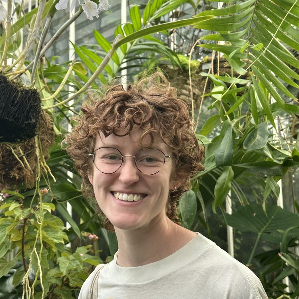
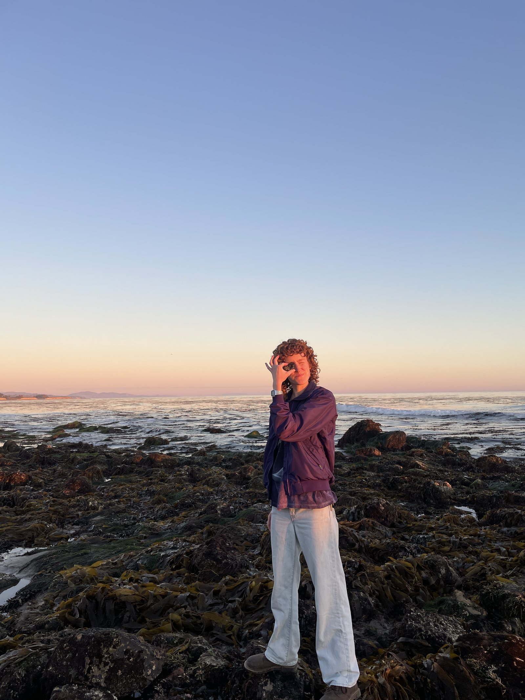

Kathryn McMahon
PhD Candidate, Department of Geography, University of California, Santa Barbara
I study how extreme heat, humidity, and air pollution shape human health, with a focus on outcomes for women, children, and outdoor workers. My work leverages satellite-derived weather data, large household surveys, individual-level clinic records, and quasi-experimental methods to isolate the causal effects of environmental exposures. My projects explore the impacts of weather extremes on child stunting in South Asia, women's reproductive health and infant mortality in Nigeria, and farmworker health in California.
I hold an MA in Geography from UC Santa Barbara and a BA in Geography & Global Studies from the University of North Carolina at Chapel Hill. My PhD research is supported by the National Science Foundation's Graduate Research Fellowship Program, a UCSB Chancellor's Fellowship, and the Schmidt Family Foundation.

In my free time, you can probably find me cooking, biking, or exploring the tide pools along the Santa Barbara coast.